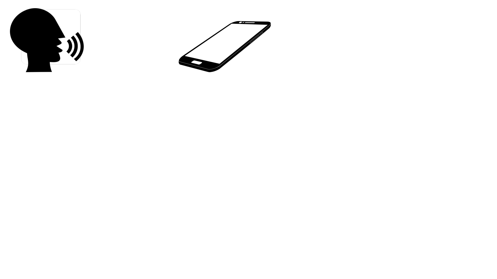
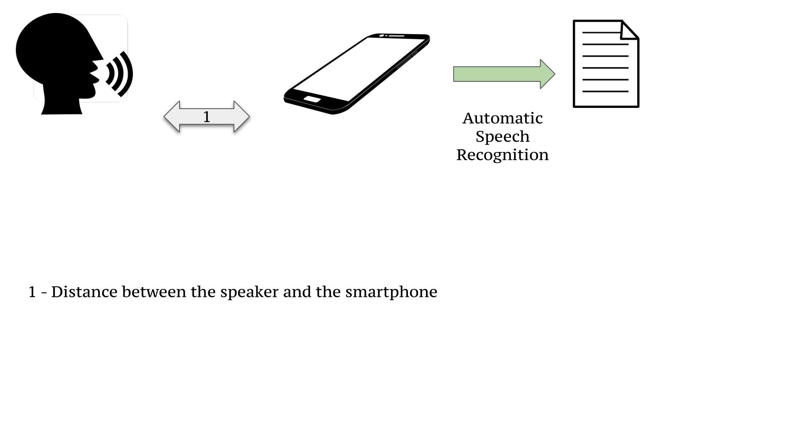
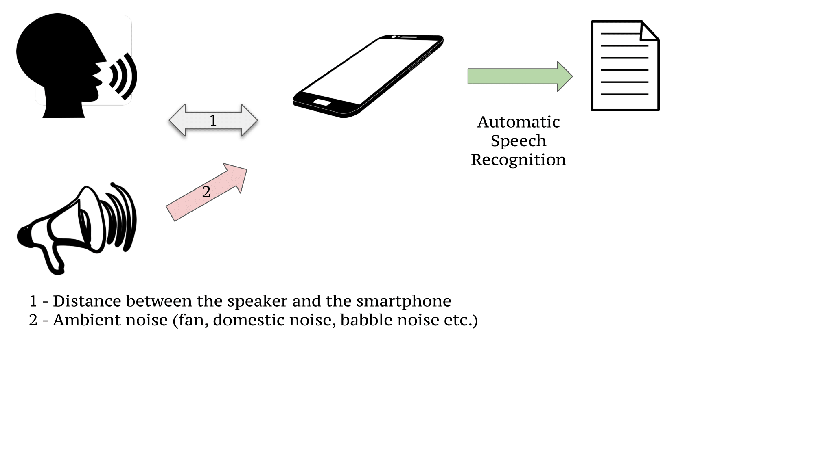
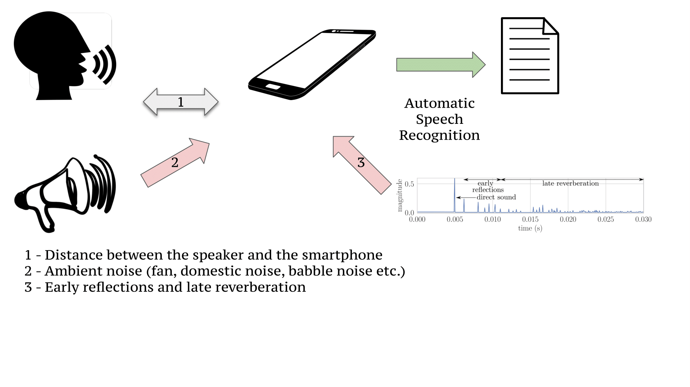
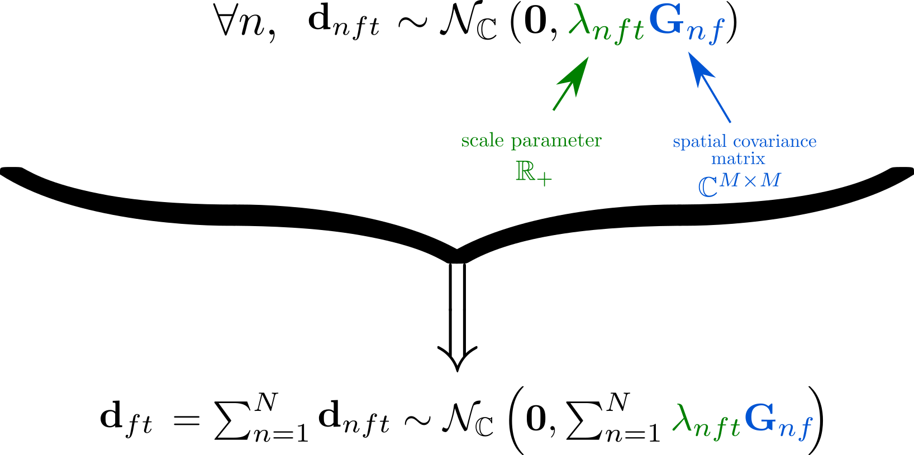
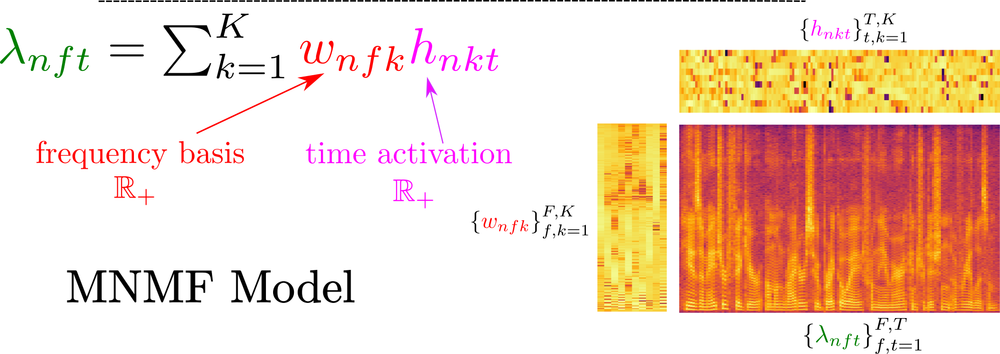
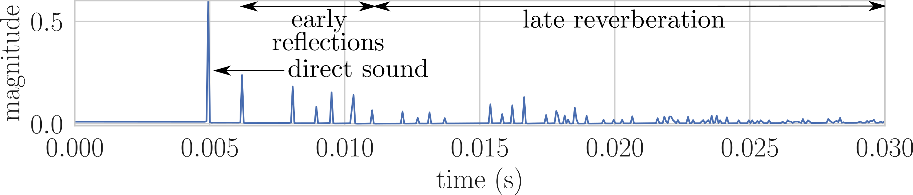
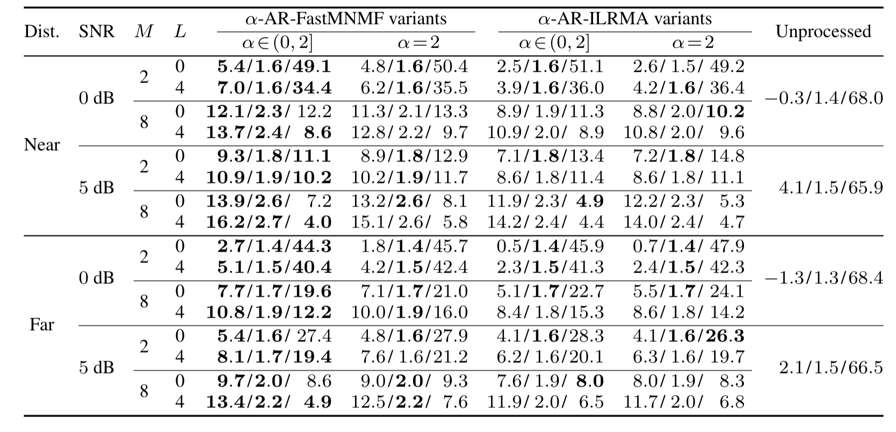
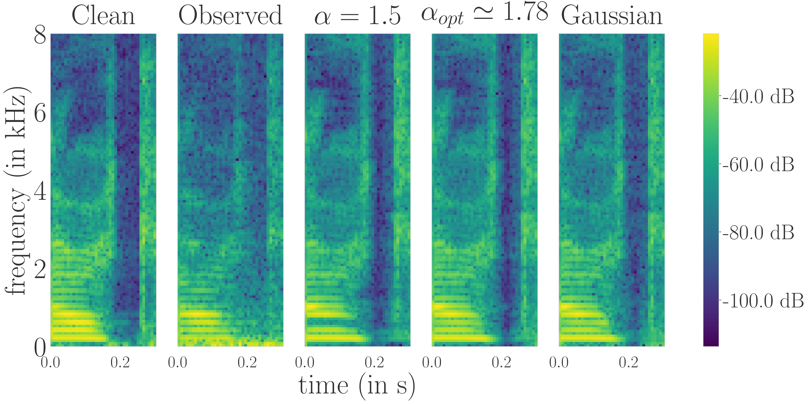

Alpha-Stable Autoregressive Fast Multichannel Nonnegative Matrix Factorization for Joint Speech Enhancement and Dereverberation
INTERSPEECH 2021 - A-V-3-2
matfontaine.github.io
August 31st, 2021
Mathieu FONTAINE, Kouhei SEKIGUCHI, Aditya Arie NUGRAHA, Yoshiaki BANDO, Kazuyoshi YOSHII

Outline
I - Autoregressive FastMNMF $\color{black}\text{[Sek. 20]}$
II - Alpha-Stable Autoregressive FastMNMF $\color{black}\text{[Fon. 21]}$
III - Parameter Estimation
IV - Speech Enhancement and Automatic Speech Transcription Evaluation
V - Conclusion and Future Works
- Sekiguchi, K. et al. (2021, ICASSP). Autoregressive Fast Multichannel Nonnegative Matrix Factorization For Joint Blind Source Separation And Dereverberation
- Fontaine, M. et al. (2021, INTERSPEECH). Alpha-Stable Autoregressive Fast Multichannel Nonnegative MatrixFactorization for Joint Speech Enhancement and Dereverberation
I - Autoregressive FastMNMF
Why Speech Enhancement and Dereverberation ?
Why Speech Enhancement and Dereverberation ?
Why Speech Enhancement and Dereverberation ?
Why Speech Enhancement and Dereverberation ?
Why Speech Enhancement and Dereverberation ?
Why Speech Enhancement and Dereverberation ?
How to represent the direct sound and the noisy observation ?
Autoregressive model
- Autoregressive model of order $L$ + STFT representation
- $N$ sources capted by $M$ sensors resulting in $T$ time frame and $F$ frequency bins
$$ \bold{x}_{ft} = \bold{d}_{ft} + \bold{r}_{ft} \triangleq \underbrace{\sum_{n=1}^{N}\bold{d}_{nft}}_{{\color{black}\text{direct sound}}} + \underbrace{\sum_{l=\Delta}^{\Delta+L-1} \bold{B}_{fl} \bold{x}_{f,t-l}}_{\color{black}{\text{reverberation}}} $$
- $\Delta:$ Delay
- $\bold{B}_{fl}:$ Coefficients of the AR process
Weighted Prediction Error (WPE)$~~\color{black}\text{[Nak. 10]}$
$$ \bold{d}_{ft} \sim \mathcal{N}_{\mathbb{C}}\left(0, \lambda_{ft}\bold{I}\right); \bold{x}_{ft} \mid \{\bold{x}_{f,t-l}\}_{l=1}^{L} \sim \mathcal{N}_{\mathbb{C}}\left(\bold{r}_{ft}, \lambda_{ft}\bold{I}\right) $$- Maximization of $\log p \left(\{\bold{x}_{ft}\}_{f,t} \mid \{\bold{B}_{fl}\}_{f,l}, \{\lambda_{ft}\}_{f,t}\right)$ for parameter estimation
- Nakatani, T. et al. (2010, ASLP). Speech dereverberation based on variance-normalized delayed linear prediction
Spatial Gaussian Model + MNMF
 - Duong, N. et al. (2009, TASLP). Under-determined reverberant audio source separation using a full-rank spatial covariance model.
Autoregressive (AR) Fast Gaussian MNMF Models
AR Independent Low-Rank Matrix Analysis (AR-ILRMA) ${\color{black}\text{[Kag. 18}]}$
- $\bold{d}_{nft} = \bold{a}_{nf}s_{nft} \quad\quad\quad\quad\quad\quad\quad\quad\quad\quad \text{(Direct sound propagation model)}$
- Then $\bold{d}_{nft} \sim \mathcal{N}_{\mathbb{C}}\left({\color{green}\lambda_{nft}}\bold{a}_{nf}\left(\bold{a}_{nf}\right)^{\mathrm{H}}\right)\quad\quad ~~\text{(Rank-1 SCM model)}$
- MNMF model for ${\color{green}\lambda_{nft}}$ parameters
AR-Fast MNMF 2: a joint diagonalization (JD) technique${\color{black}\text{ [Sek. 21]}}$
- $\bold{d}_{nft} \sim \mathcal{N}_{\mathbb{C}}\left({\color{green}\lambda_{nft}}\underbrace{\bold{Q}_f^{-1}\mathrm{Diag}(\tilde{\bold{g}}_{n})\bold{Q}_f^{-\mathrm{H}}}_{\color{blue}=\bold{G}_{nf}}\right)$
- MNMF model for ${\color{green}\lambda_{nft}}$ parameters
- AR-ILRMA $\subset$ AR-FastMNMF2
- Kagami, H. et al. (2018, ICASSP). Joint separation and dereverberation of reverberant mixtures with determined multichannel non-negative matrix factorization
- Sekiguchi, K. et al. (2021, ICASSP). Autoregressive Fast Multichannel Nonnegative Matrix Factorization For Joint Blind Source Separation And Dereverberation
AR-FastMNMF2 Optimization
Parameter estimation
- Expectation-Maximization approach $\implies$ maximization of the log-likelihood
- $w_{nfk}\leftarrow w_{nfk}\sqrt{\frac{\sum_{t, m=1}^{T, M} h_{nkt} \tilde{g}_{nm} \tilde{d}_{ftm}\tilde{y}_{ftm}^{-2}} {\sum_{t, m=1}^{T, M} h_{nkt} \tilde{g}_{nm} \tilde{y}_{ftm}^{-1}}}; ~~ h_{nkt}\leftarrow h_{nkt}\sqrt{\frac{\sum_{f, m=1}^{F, M} w_{nfk} \tilde{g}_{nm} \tilde{d}_{ftm}\tilde{y}_{ftm}^{-2}} {\sum_{f, m=1}^{F, M} w_{nfk} \tilde{g}_{nm} \tilde{y}_{ftm}^{-1}}}; $
- $\tilde{g}_{nm}\leftarrow \tilde{g}_{nm}\sqrt{\frac{\sum_{f, t, m=1}^{F, T, M} \lambda_{nft} \tilde{d}_{ftm}\tilde{y}_{ftm}^{-2}} {\sum_{f, t, m=1}^{F, T, M} \lambda_{nft}\tilde{y}_{ftm}^{-1}}}$
- $\bold{q}_{fm}\leftarrow(\bold{Q}_f \bold{V}_{fm})^{-1}\bold{e}_m;\quad \bold{q}_{fm}\leftarrow(\bold{q}_{fm}^{\mathrm{H}}\bold{V}_{fm}\bold{q}_{fm})^{-\frac{1}{2}}\bold{q}_{fm}$ ${\color{black}\text{[Ono 11]}}$
- AR coefficients $\bold{B} \triangleq \{\bold{B}_{fl}\}_{f,l=1}^{F,L}$ are updated as in ${\color{black}\text{[Nak. 11]}}$
- N. Ono et al. (WASPAA, 2011). Stable and fast update rules for independent vector analy-sis based on auxiliary function technique.
- T. Nakatani et al. (ASLP, 2020). Jointly optimal denoising, dereverberation,and source separation.
II - Alpha-Stable Autoregressive FastMNMF
Why heavy-tailed models for dereverberation?
- Direct sound $\implies$ is an outlier in the time domain compare to the early reflections and the late reverberation 
- NMF initialization $\implies$ often tricky with a light-tail model${~\color{black}\text{[Bou. 08]}}$
- Light tails $\implies$ less robust against impulsive noise or uncommon scenario
- Boutsidis C. (2008, Pattern Recognition). SVD based initialization: A head start for nonnegative matrix factorization
Why $\alpha$-stable theory ?
- Heavy-tailed + stability by linear combination (sum of $\alpha$-stable is $\alpha$-stable)
- $\alpha \in (0,2]$: the smaller it is, the heavier are the tails of the distribution
- $\alpha=2$: Gaussian, $\alpha=1$: Cauchy, $\alpha=0.5$: Levy
- Generalized the multichannel Wiener filter in the fractional domain${~\color{black}\text{[Fon. 20]}}$
- Samoradnitsky G. et al. (Chapman, 1994). Non-Gaussian Random Processes: Stochastic Models with Infinite Variance.
- Fontaine M. et al. (Signal, 2020). Separation of $\alpha$-stable Random Vectors.
Complex-valued Multivariate Isotropic Symmetric Elliptically Contoured $\alpha$-stable distribution ($\mathcal{S}_{\mathbb{C}}^{\alpha}(0, \bold{R}))$
- Two parameters: $\alpha$ and a positive semidefinite shape matrix $\bold{R}$
- $\bold{u}\sim\mathcal{S}_{\mathbb{C}}^{\alpha}$ can be seen as a Gaussian where the covariance is perturbed
- The shape matrix model designs a natural AR-FastMNMF extension
$\alpha$-AR-FastMNMF
- Source TF-independent $\mathcal{S}_{\mathbb{C}}^{\alpha}$ model + ARFastMNMF on direct sources entries $\bold{d}_{nft}$:
- $\bold{Y}_{nft}\triangleq\lambda_{nft}\bold{Q}_f^{-1}\mathrm{Diag}(\tilde{\bold{g}}_{n})\bold{Q}_f^{-\mathsf{H}}$
- ${\color{red} \bold{\Phi}\triangleq \{\phi_{nt}\}_{n,t=1}^{N,T}}$ only depends on source index and time frame
- The mixing model becomes:
$\mathbf{x}_{ft} \mid {\color{red} \bold{\Phi}} \sim \mathcal{N}_{\mathbb{C}}\left(\mathbf{0},\sum_{n=1}^{N}{\color{red}\phi_{nt}}\bold{Y}_{nft}\right)$
- Knowing $\bold{\Theta}=\{\{\lambda_{nft}\}, \bold{B},\{\bold{Q}_{f}\}, \{\tilde{\bold{g}}_{n}\}\}, {\color{red} \bold{\Phi}}, \bold{x}_{ft}, \alpha$, we get: $$\mathbb{E}_{{\color{red} \bold{\Phi}} \mid \bold{x}_{ft}}\left[\mathbb{E}\left[\mathbf{d}_{nft}\mid\mathbf{\Theta}, {\color{red} \bold{\Phi}}, \bold{x}_{ft}, \alpha\right]\right] = \mathbb{E}_{{\color{red} \bold{\Phi}} \mid \bold{x}_{ft}}\left[{\color{red} \phi_{nt}}\bold{Y}_{nft}\left(\sum_{n^{\prime}=1}^{N}{\color{red} \phi_{n^{\prime}t}}\bold{Y}_{n^{\prime}ft}\right)^{-1} \right]\bold{d}_{ft}$$
How to estimate the parameters ?
III: Parameter Estimation
Lower-bound
We develop a Majorization-Minimization algorithm for the parameter estimation- Consider the LL: $\log p(\bold{X} |\bold{\Theta},\alpha) = \log \int p(\bold{X} |\bold{\Theta}, \bold\Phi) p(\bold\Phi) d\bold\Phi$
- We discretize and minimize the LL by the following lower-bound:
- $\text{KL}$ denotes the Kullback-Leibler divergence
- $\tilde{d}_{ftm} = \left|\bold{q}_{fm}^{\mathsf{H}}\bold{d}_{ft}\right|, \tilde{y}_{ftmp} \!=\! \sum_{n,k=1}^{N,K} \tilde{\phi}_{ntp} w_{nkf} h_{nkt} \tilde{g}_{nm}$
- $\forall p, \tilde{\phi}_{ntp}$ are realizations of $p\left(\phi_{nt} \mid \bold{X}, \bold{\Theta}, \alpha\right)$
- $q\left(\theta\right)$ satisfies the equality with the LL when $ q(\theta) = p\left(\phi \mid \bold{X}, \bold{\Theta}\right)$
How to estimate $\bold{\Theta}, \bold\Phi$ and $\alpha$ ?
E-Step: computation of $\bold\Phi$
- $p\left(\phi_{nt} \mid \bold{X}, \bold{\Theta}, \alpha\right)$ is intractable
- Metropolis-Hastings algorithm is used to get samples $ \tilde{\phi}_{ntp}$
Metropolis-Hastings Procedure
- Draw samples from $\phi_{nt,f}^{\text{new}}\sim\mathcal{PS}^\alpha\left(2\cos\left(\frac{\pi\alpha}{4}\right)^{2/\alpha}\right)$
- Sample $\nu\sim\mathcal{U}\left(\left[0,1\right]\right)$ from the uniform distribution
- Compute the acceptance probability for all $f$:
- Acceptance test:
- if $\nu\!<\!\text{acc}\!\left(\phi_{nt,f}^{\text{old}}\!\rightarrow\!\phi_{nt,f}^{\text{new}}\right)$, $\phi_{nt,f}\!=\!\phi_{nt,f}^{\text{new}}$ (accept)
- otherwise, $\phi_{nt,f}\!=\!\phi_{nt,f}^{\text{old}}$ (reject)
- Average by computing $\tilde{\phi}_{ntp} \triangleq \frac{1}{F}\sum_{f=1}^{F}\phi_{nt,f}$
M-Step: estimation of $\Theta$
Multiplicative update rules similar to AR-FastMNMF:- $w_{nfk}\leftarrow w_{nfk}\sqrt{\frac{\sum_{t, m, p=1}^{T, M, P}{\color{red}\tilde{\phi}_{ntp}} h_{nkt} \tilde{g}_{nm} \tilde{d}_{ftm}\tilde{y}_{ftmp}^{-2}} {\sum_{t, m, p=1}^{T, M, P} {\color{red}\tilde{\phi}_{ntp}}h_{nkt} \tilde{g}_{nm} \tilde{y}_{ftmp}^{-1}}};$
- $h_{nkt}\leftarrow h_{nkt}\sqrt{\frac{\sum_{f, m, p=1}^{F, M, P} {\color{red}\tilde{\phi}_{ntp}}w_{nfk} \tilde{g}_{nm} \tilde{d}_{ftm}\tilde{y}_{ftmp}^{-2}} {\sum_{f, m, p=1}^{F, M, P} {\color{red}\tilde{\phi}_{ntp}}w_{nfk} \tilde{g}_{nm} \tilde{y}_{ftmp}^{-1}}}; $
- $\tilde{g}_{nm}\leftarrow \tilde{g}_{nm}\sqrt{\frac{\sum_{f, t, m, p=1}^{F, T, M, P}{\color{red}\tilde{\phi}_{ntp}} \lambda_{nft} \tilde{d}_{ftm}\tilde{y}_{ftmp}^{-2}} {\sum_{f, t, m, p=1}^{F, T, M, P}{\color{red}\tilde{\phi}_{ntp}} \lambda_{nft}\tilde{y}_{ftmp}^{-1}}}$
- $\bold{q}_{fm}\leftarrow(\bold{Q}_f \bold{V}_{fm})^{-1}\bold{e}_m;\quad \bold{q}_{fm}\leftarrow(\bold{q}_{fm}^{\mathrm{H}}\bold{V}_{fm}\bold{q}_{fm})^{-\frac{1}{2}}\bold{q}_{fm}$
- Same update of $\bold{B} \triangleq \{\bold{B}_{fl}\}_{f,l=1}^{F,L}$ where $\tilde{y}_{ftm}$ are replaced by $\frac{1}{P}\sum_{p=1}^{P}\tilde{y}_{ftmp}$
Estimation of $\alpha$
- $\alpha$-stable distributions also admits a generalized central limit theorem
- A robust estimation of $\alpha$ can be given for i.i.d. realizations
Estimation method
- Let assume that $\bold{X}$ contains $T$ time frame
- Define $B \!\triangleq\! \left\{\bold{x}_{ft}\right\}_{f,t=1}^{F,T^\prime} \triangleq \left\{\bold{x}_{b}\right\}_{b=1}^{F,T^\prime}$ a non-overlapping set of $T^{\prime} < T$ frame
- The shape matrices $\bold{R}_{ft}$ are assumed to be i.i.d
- Random split of B into $B_{2}$ minibatches of $B_{1}$ samples with $|B| = B_{1}B_{2}$
- $\hat{\alpha}_{B}$ is given by ($\bold\xi_{b^\prime} \!\triangleq\! \sum_{b^{\prime\prime}=1}^{B_{1}} \bold{x}_{b^{\prime\prime} + (b^{\prime}-1)B_{1}}$):
IV - Speech Enhancement and Automatic Speech Transcription Evaluation
Settings
Dataset description
- REVERB CHALLENGE dataset sampled at $16~$kHz recorded with $8$ microphones
- RT$_{60}$ are either 0.25, 0.5 or 0.7s
- 3 signal to noise ratio (SNR) level: $0, 5$ dB
- $2$ distances: "near" (50cm between mic and speaker) & "far" ( $\simeq$ 2m)
- $M \in \left\{2, 8\right\}$ are considered with $N=M$ (to include AR-ILRMA)
- enhanced speech source selected as the one having the hightest average energy
- $20$ utterances for all cases
- Signal to Distorsion Ratio (SDR), Perceptual Evaluation of Speech Quality (PESQ)(higher is better) and word error rate ratio (lower is better)
- Transformer-based ASR from Speechbrain is used
Scores
Baseline Methods and Configuration
Methods
- $\alpha$-AR-FastMNMF: Proposed method for $\alpha < 2$ and AR-FastMNMF when $\alpha=2$
- $\alpha$-AR-ILRMA: Proposed ILRMA version for $\alpha < 2$ and AR-ILRMA when $\alpha=2$
Settings
- $200$ iterations for the EM algorithm with $50$ first iterations using AR-FastMNMF
- NMF coefficients are randomly initialized
- Demixing matrix in AR-ILRMA and $\bold{Q}_{f}$ are initialized as identity matrix $\forall f$
- Tap length $L\in\{0,4\}$ and delay $\Delta=3$
- $T^{\prime} = 100$ for $\alpha$ estimation
- $P=10$ MH sampling for $40$ iterations with a burning period of $30$
SDR/PESQ/WER performances
- $L=0$, ILRMA sometimes achieves the best WER score.
- Combination of AR + $\alpha$ + FastMNMF achieves the best scores in general
Impact of $\alpha$ on spectrogram estimation
- if $\alpha$ is too small, some phoneme harmonics may vanished
- $\alpha_{opt}$ depicts a spectrogram less noisy than Gaussian in silence
Speech enhancement demo
SNR=$0$dB, far distance ($\simeq 2m$), $RT_{60}=0.5s$
$\alpha$-AR-ILRMA
$\alpha$-AR-FastMNMF
V - Conclusion and Future Works
Conclusion & Future Works
Conclusion
- Extension from Gaussian AR-FastMNMF to AR-$\alpha$-FastMNMF
- Interprtability of impulse variable for dereverberation
- Compare to previous studies, automatic optimization of $\alpha$
Future works
Current parameter model
- Replace $\alpha$ by $\alpha_{t}$ to model the dynamic range along time
Deep Neural Network extensions
- Replace the NMF speech model by a heavy-tailed deep speech prior $\color{black}\text{[Fon. 19]}$
- Use a normalizing flow applied on FastMNMF decomposition $\color{black}\text{[Nug. 20]}$
- A.A. Nugraha, K. Sekiguchi, M. Fontaine, Y. Bando, K. Yoshii (SPL, 2020) Flow-Based Independent Vector Analysis for Blind Source Separation.
- M. Fontaine, A.A. Nugraha, R. Badeau, K. Yoshii and A. Liutkus (EUSIPCO, 2019). Cauchy Multichannel Speech Enhancement with a Deep Speech Prior.
Thank you for your attention ! Questions ?